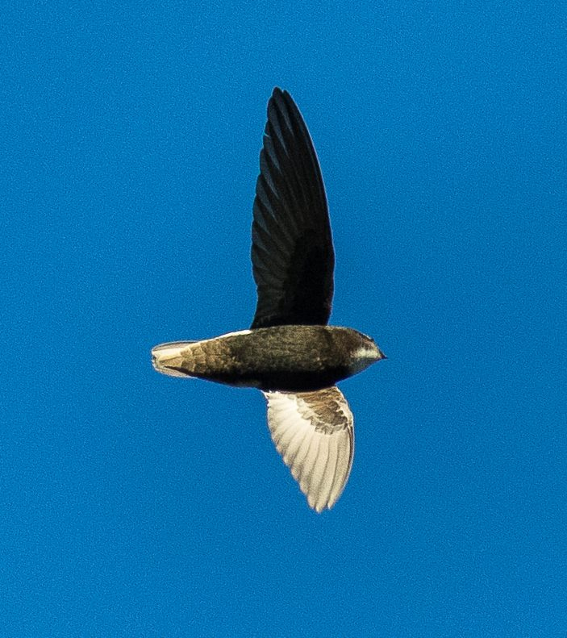

अबाबीलHouse Swift
Apus affinis · Apodidae · BRD-0043

- Scientific name
- Apus affinis (J.E.Gray, 1830)
- Family
- Apodidae
- Hindi
- अबाबील
- Status here
- native
- IUCN
- LC
When to look कब देखें
Present all year.
अबाबील / House Swift
Apus affinis (J.E.Gray, 1830) — Apodidae
अबाबील (हाउस स्विफ्ट) — पूर्वी उत्तर प्रदेश के शहरों और कस्बों में पाया जाने वाला एक अत्यंत परिचित, सामाजिक और छोटा निवासी हवाई पक्षी है। इसका शरीर गठीला और गहरे काले-भूरे रंग का होता है, जिसके गले पर सफेद धब्बा और पीठ के निचले हिस्से (rump) पर एक साफ सफेद पट्टी (white rump patch) होती है। इसकी पूंछ छोटी और लगभग चौकोर (square-ended) होती है। यह पक्षी मानव बस्तियों, पुराने मंदिरों, पुलों के मेहराबों और सरकारी भवनों की छतों के नीचे मिट्टी, पंखों और लार की मदद से घने कॉलोनियों में घोंसले बनाता है। यह हमेशा झुंड में उड़ता है और उड़ते हुए ही हवा में मौजूद छोटे मच्छरों और मक्खियों का शिकार करता है।
Quick Identification त्वरित पहचान
| Feature | Description |
|---|---|
| Size | Small stocky swift (12–15 cm total length); wingspan 32–34 cm |
| Colouration | Sooty blackish-brown body; contrasting bright white rump band and white throat patch |
| Wings & Tail | Long, broad, sickle-shaped wings; short, almost square tail (lacks fork) |
| Nesting | Messy mud-and-feather nests glued under concrete eaves, arches, or old structures |
| Flight | Super-fast, swooping flight with rapid wing beats and brief glides; highly social |
Field tip: Look for screaming flocks swooping around old brick buildings, bridges, or temple arches. The bold white bar across its lower back (rump) and the square-ended tail are diagnostic.
Morphology आकारिकी
Biometrics (typical measurements in the northern Indian plains):
| Measurement | Range |
|---|---|
| Total length | 120–150 mm |
| Wing (flattened chord) | 120–138 mm |
| Tail | 38–47 mm |
| Tarsus | 8–11 mm |
| Bill (culmen from base) | 5–7 mm |
| Weight | 18–30 g |
Plumage: The plumage is mostly deep sooty-black or dark blackish-brown, showing a slight metallic sheen under direct sunlight. The forehead is pale grey-brown. There is a prominent, well-defined crescent-shaped white patch on the throat. The lower back (rump) has a broad, diagnostic white band that extends slightly to the flanks. The belly is dark sooty-brown. Wings and tail are dark brown.
Bare parts: The bill is extremely short, broad at the gape, and black. Irises are dark brown. The legs and feet are small, purple-black, with all four toes facing forward (pamprodactylous), adapted for clinging to rough stone and concrete surfaces but useless for walking.
Vocalisations
House Swifts are highly vocal, especially when flying in social groups near nesting sites.
- Colony / Flight Call: A rapid, high-pitched, rattling chatter or scream: shreeee-tirrr-tirrr-shreeee, repeated in chorus by the flock.
- Alarm Call: A sharp, rapid clicking or ticking sound when a raptor approaches the colony.
Ecological Role पारिस्थितिक भूमिका
Colonial pest controller.
- Aerial foraging: They feed exclusively on the wing, consuming huge quantities of small flying insects (winged termites, flies, aphids, and mosquitoes), reducing the pest pressure in nearby agricultural and residential areas.
- Micro-ecosystem creator: Their colonial mud nests are often reused by other urban birds (like house sparrows) and provide shelter for various insect and spider species.
Life Cycle / Phenology जीवन चक्र
- Breeding season: March to October, producing multiple broods. Nest building and breeding activity peak during warm humid months before and after the monsoon.
- Nesting: Social nesters that build nests touching one another.
- Nest structure: A globose, enclosed nest made of feathers, straw, dry grass, and down, cemented together and attached to walls and ceilings using mud and saliva. The entrance is a small slit at the side.
- Nesting site: Under concrete roof overhangs, eaves of old houses, arches of bridges, and ceilings of temples or ruins.
- Clutch size: 2 to 3 pure white, oval-shaped eggs.
- Incubation: 20–24 days, shared by both male and female.
- Fledging: The chicks are altricial (naked and helpless). They are fed by both parents with regurgitated insect balls. The young have strong claws to hold onto the nest walls. They fledge in 35–42 days, leaving the nest as fully functional flyers.
Host Plants or Prey आहार
Primary food items:
- Insects: Consumes small flying insects exclusively, including mosquitoes, midges, flying termites (especially during post-rain swarms), small beetles, bugs, and mid-air ants.
Predators / Natural Enemies शत्रु
- Raptors: Shikra (Accipiter badius) and peregrine falcons hunt swifts near their roosts.
- Arboreal / Urban Predators: House Crows (Corvus splendens) and house rats (Rattus rattus) raid accessible nests under eaves to eat eggs and nestlings.
Agricultural / Human Relevance कृषि प्रासंगिकता
Household insect regulator. House Swifts play a significant role in reducing the population of household mosquitoes and termites in towns and villages of Basti.
They are highly adapted to urban concrete architecture. However, modern smooth-walled buildings with glass facades lack the rough eaves and corners needed for their nests. The preservation of older public buildings and bridges is critical for their conservation.
Expected Locally स्थानीय रूप से अपेक्षित
Not a field record. Written from published accounts for eastern Uttar Pradesh. No confirmed local sighting yet — if you have seen it, that is what the atlas needs.
अभी तक स्थानीय पुष्टि नहीं। यह विवरण प्रकाशित स्रोतों से है, किसी अवलोकन से नहीं।
A common resident in Basti town, Babhnan, and Harraiya. Large colonies can be seen nesting under the arches of old railway bridges and the ceilings of historic temples and government buildings. Screaming groups of 20–50 birds are frequently observed flying at high speeds through town streets, especially in the early mornings and late afternoons.
Distribution वितरण
Global range: Widespread across Africa, the Middle East, the Indian Subcontinent, and parts of Southeast Asia.
In India: A common resident throughout the country, except in the high Himalayas.
In Uttar Pradesh: Abundant resident in all urban centers, old towns, and rural settlements.
In Basti district / eastern UP: Found in all urban blocks, large villages, and near major bridge structures.
Research Questions शोध प्रश्न
Anyone can investigate these | कोई भी इन प्रश्नों की जाँच कर सकता है
- How do House Swifts partition airspace with Asian Palm Swifts when foraging over the same Basti ponds? — Record flight heights and foraging areas of both species.
- What is the preference of House Swifts for brick/mortar walls vs. modern concrete walls for nest attachment? — Survey buildings in Basti and map colonies.
- Does the temperature inside their enclosed mud nests remain cooler than the ambient air during hot UP summers? — Use thermal sensors to monitor nests.
- How do House Swifts react when House Sparrows attempt to occupy their active mud nests? / जब घरेलू गौरैया अबाबील के सक्रिय घोंसलों पर कब्जा करने की कोशिश करती है तो वे क्या प्रतिक्रिया देते हैं? — Observe species interactions at nesting sites.
- Does the use of synthetic plaster on modern houses reduce nest-building success of these birds? / आधुनिक घरों पर सिंथेटिक प्लास्टर का उपयोग अबाबील के घोंसला बनाने की सफलता को कैसे प्रभावित करता है? — Compare nest stability on different wall types.
Similar Species मिलती-जुलती प्रजातियाँ
| Species | Key Difference | हिंदी |
|---|---|---|
| [BRD-0042 Asian Palm Swift] (Cypsiurus balasiensis) | Smaller; pale brown; deeply forked tail; lacks white rump; nests exclusively on palm leaves | ताड़-चट्री — छोटा, भूरा शरीर, दो-फांक पूँछ, ताड़ के पत्ते |
| Barn Swallow (Hirundo rustica) | Blue upperparts; long tail streamers; orange throat; open cup nest made of mud on ledges | अबाबील/सवालो — नीला-काला शरीर, खुली कटोरी घोंसला |
| Dusky Crag Martin (Ptyonoprogne concolor) | Dull brown; short tail with white spots; lacks white rump; cup nest | चट्टानी अबाबील — धूसर भूरा शरीर, बिना सफ़ेद कमर |
Field rule: Stocky dark body, prominent white rump band, white throat, square-ended tail, and loud screaming group-flight identify the House Swift.
Taxonomy & Classification वर्गीकरण
Original description. John Edward Gray described the House Swift as Cypselus affinis in 1830 in his work Illustrations of Indian Zoology (Vol. 1, plate 35, fig. 2). The type locality was India (Ganges valley). The genus name Apus is the Latin word for swift, derived from the Greek apous (footless), referring to their very small legs. The specific name affinis is Latin for "allied" or "related", referring to its similarity to other swifts.
Subspecies. Up to 6 subspecies are recognised. The subspecies present in UP is:
| Subspecies | Authority | Range | Notes |
|---|---|---|---|
| A. a. affinis | (J.E.Gray, 1830) | India, Pakistan, Nepal, Myanmar | UP subspecies; nominate form |
Family and order placement. Placed in the order Apodiformes, family Apodidae.
Phylogenetic notes. Apus affinis is part of a species complex that includes the Little Swift (Apus nipalensis) of Southeast Asia, from which it is distinguished by its shorter and less forked tail.
IUCN status rationale. Listed as Least Concern (LC) because of its extensive range, adaptability to human structures, and stable or increasing population trend in urbanized regions.
Photo Gallery फोटो गैलरी
References संदर्भ
- Gray, J. E. (1830). Illustrations of Indian Zoology; Chiefly Selected from the Collection of Major-General Hardwicke. Vol. 1. London, pl. 35, fig. 2. [original description]
- Ali, S. & Ripley, S. D. (1999). Handbook of the Birds of India and Pakistan. Vol. 4. Oxford University Press, New Delhi.
- Grimmett, R., Inskipp, C. & Inskipp, T. (2011). Birds of the Indian Subcontinent. 2nd ed. Christopher Helm, London.
- Chantler, P. & Driessens, G. (2000). Swifts: A Guide to the Swifts and Treeswifts of the World. 2nd ed. Pica Press, Sussex.
- BirdLife International (2024). Apus affinis. IUCN Red List of Threatened Species. Ver. 2024.
- GBIF Occurrence Data — Apus affinis, Uttar Pradesh (2010–2025).
Source file: species/fauna/birds/house_swift.md